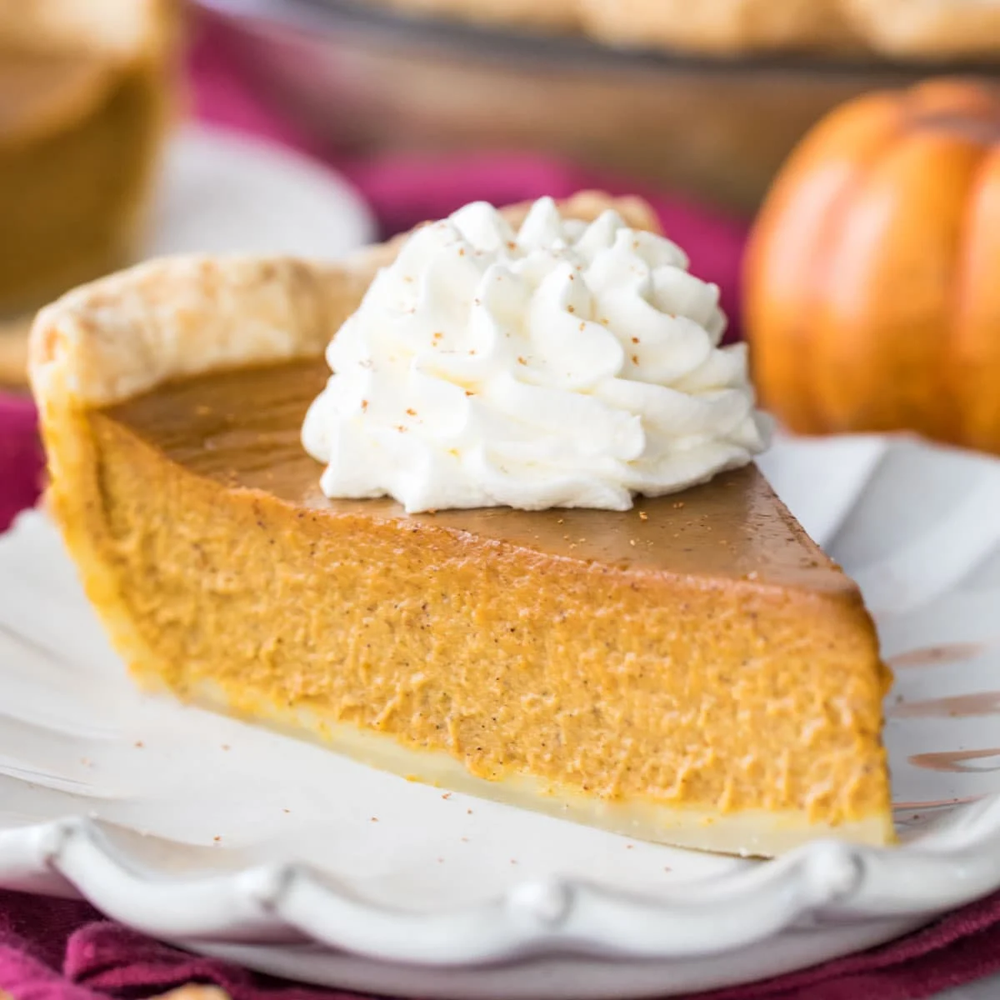

Pumpkin Pie

Ingredients
- 1 unbaked pie crust
- 16oz pumpkin puree
- 14oz sweetened condensed milk
- 2 large eggs
- 1 tsp pumpkin pie spice
Directions
- Preheat the oven to 425 degrees F (220 degrees C).
Fit pie crust into a 9-inch pie dish and place it on a baking sheet.
- Combine pumpkin puree, condensed milk, eggs, and pumpkin pie spice in a large bowl;
mix until combined. Pour into the pie crust.
- Bake in the preheated oven for 15 minutes. Reduce heat to
350 degrees F (175 degrees C) and continue to bake until filling is set,
35 to 40 minutes.
- Remove from the oven, set on a wire rack, and cool completely before serving.